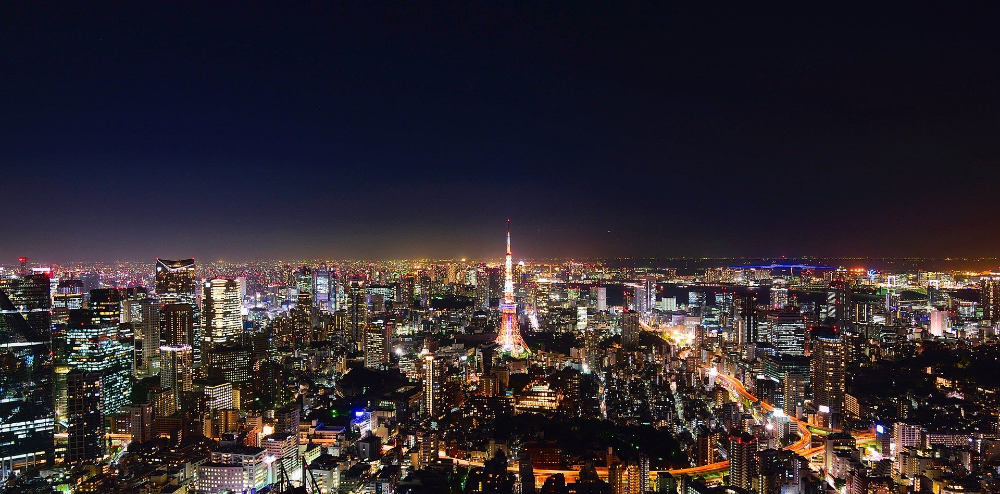
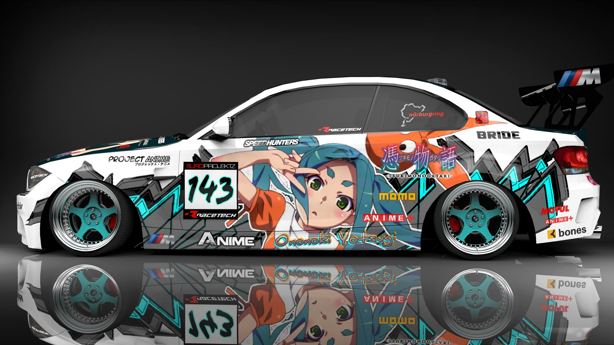

Eine Reise zur größten Metropolregion der Welt
Tokyo ist mit einer Fläche von 8.231km² und 39,105 Mio Einwohnern die größte Metropolregion der Welt
Dadurch ist Tokyo ein beliebtes Reiseziel. Nicht nur wegen seiner Größe, sondern auch wegen der Kultur und der Gegensätze.
Blick über Tokyo bei Nacht
Beliebte Stadtteile in Tokyo
- Akihabara
- Shibuya
- Ebisu
- Ginza
- Asakusa
- Harajuku
- Ikebukuro
- Odaiba
- Roppongi
- Ryogoku
- Shinjuku
- Und weitere mehr
Akihabara
Akihabara ist bekannt als Manga/Anime und Technikviertel.

Akihabara bei Nacht
Als Autofan bekommt man hier einen Einblick in die Autoszene und Itasha begeisterten. Itashas sind Fahrzeuge mit Manga/Anime Design.
Viele Japaner mit modifizierten Fahrzeugen treffen sich dort an den Straßen abends oder in den Parkhäusern.
Oft gibt es auch verschiedene Veranstaltungen.
Mehr zu Itashas gibt es auf der Seite von NGE Itasha zu lesen.